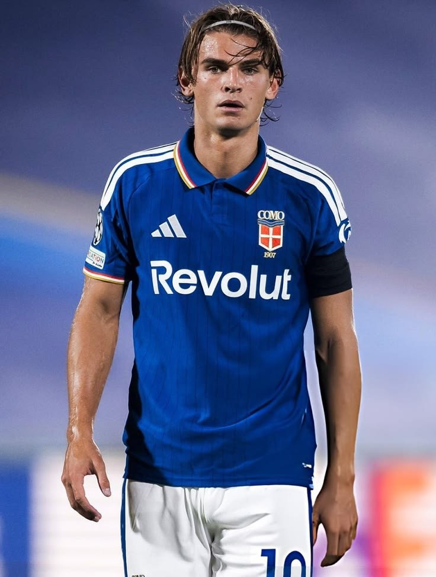
NICO PAZ
Position: Attacking Midfielder (CAM)
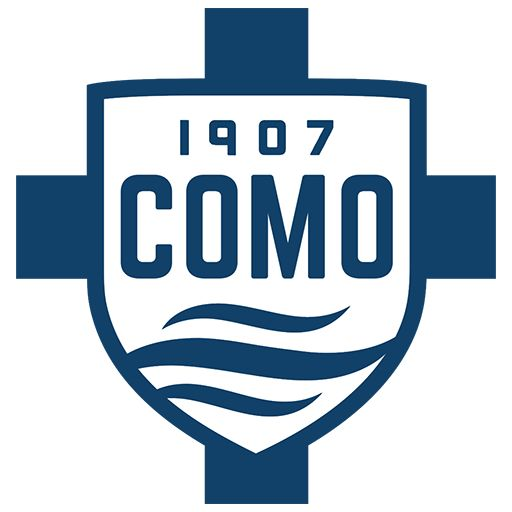
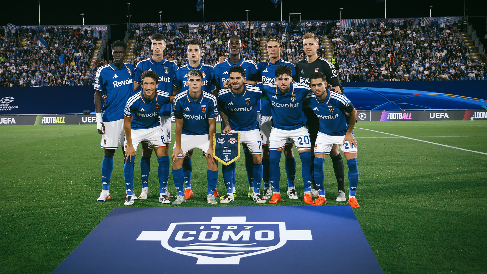
Como 1907 is an Italian football club from the city of Como, in the north of Italy. The club plays in Serie A, the top league in Italian football, and is proud of its home beside one of Europe's most beautiful lakes.
Como 1907 was founded in 1907, which is why the year is part of the club's name. The club is based in the city of Como, on the southern shore of Lake Como in Lombardy, Italy.
Como plays its home games at the Stadio Giuseppe Sinigaglia, a stadium right next to the lake. Its blue shirts and its lakeside setting make the club easy to recognise.
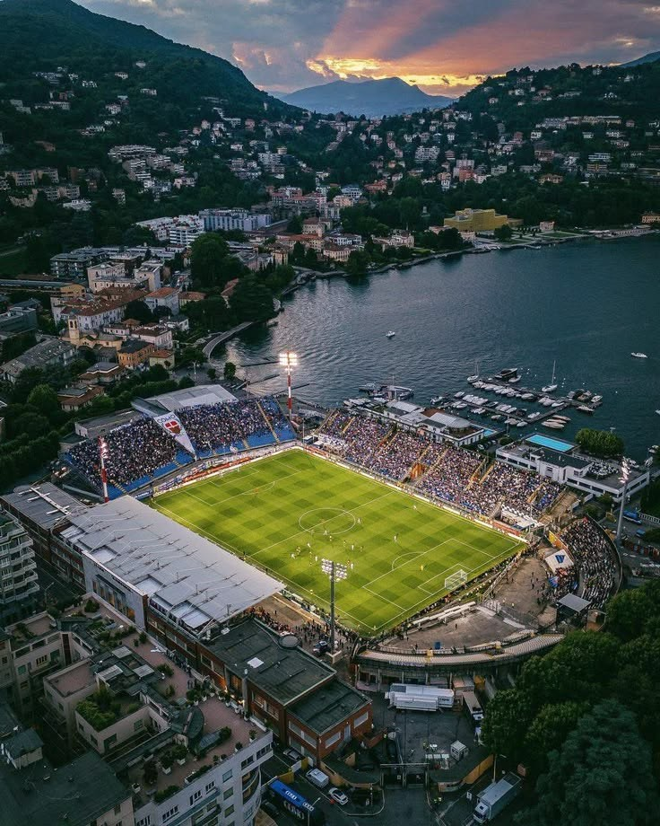
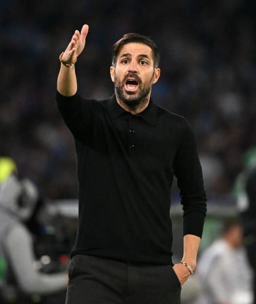
Position: Head Coach
Cesc Fabregas is a Spanish former midfielder who played for Barcelona, Arsenal, Chelsea and Spain, and won the 2010 World Cup. He ended his playing career at Como and became the club's head coach for the first Serie A season after promotion.

Position: Attacking Midfielder (CAM)
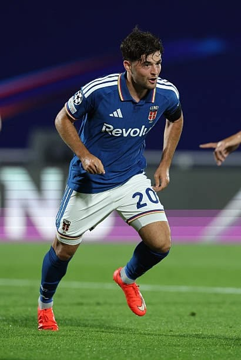
Position: Central Midfielder (CM)
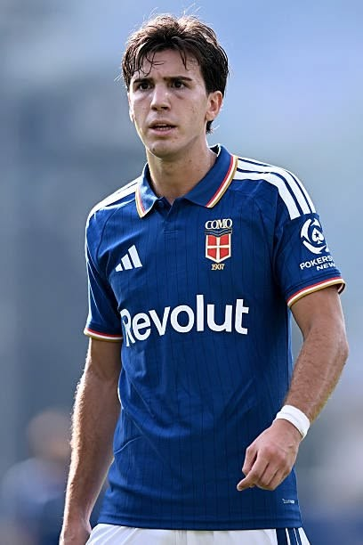
Position: Defensive Midfielder (CDM)
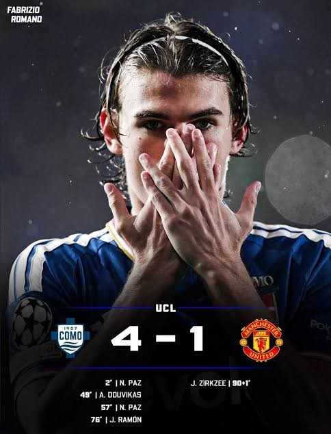
UEFA Champions League, 21 October 2026
Stadio Giuseppe Sinigaglia, Como
Como beat Manchester United 4-1 at home in the Champions League. Como scored after just two minutes and never let up.
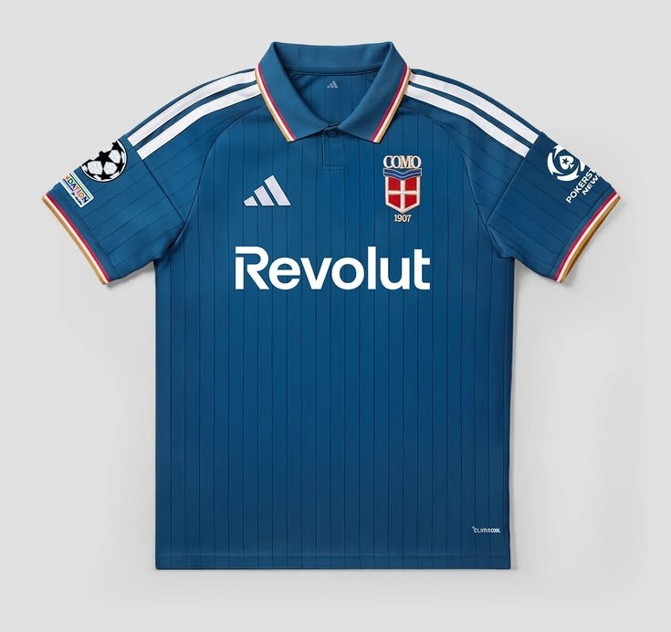
The classic blue shirt worn at the Stadio Giuseppe Sinigaglia.
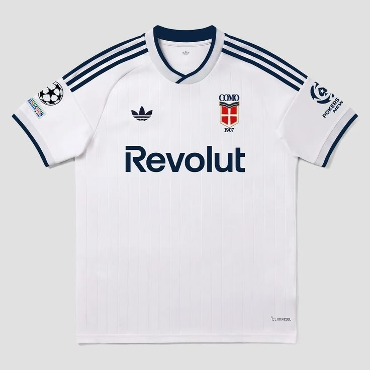
The white shirt with blue details, worn in games away from home.
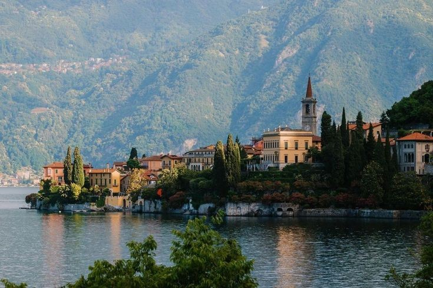
This is a fan project. For news, fixtures, tickets and official contact details, please visit the club's official website.
Visit the official website